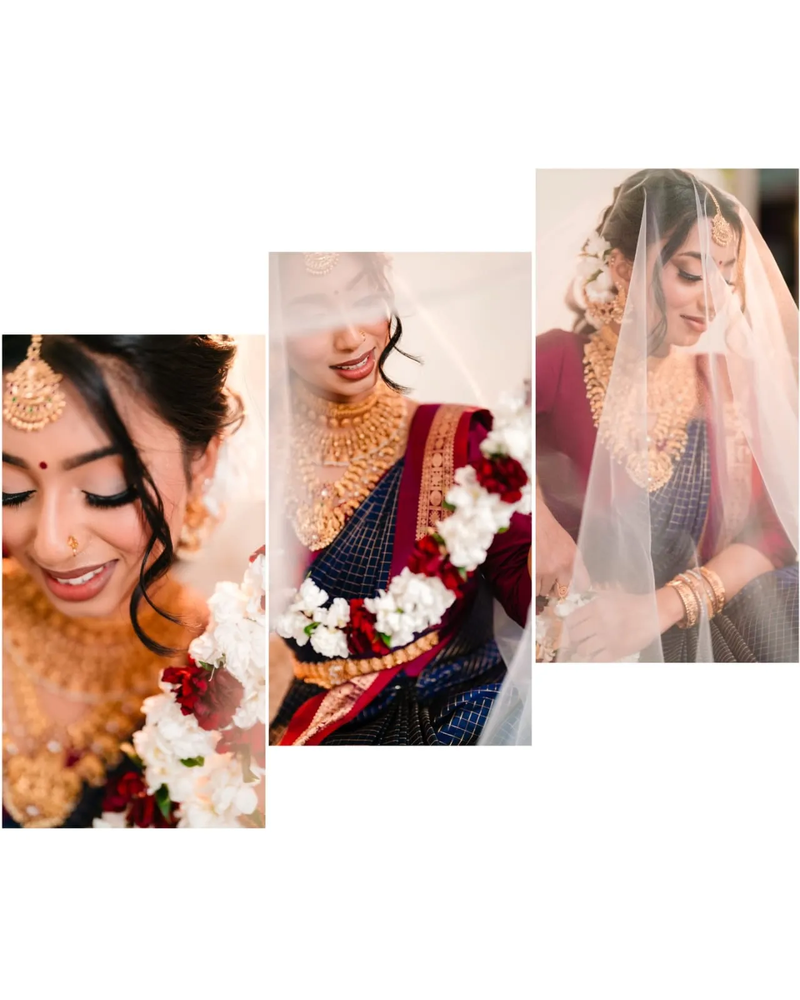
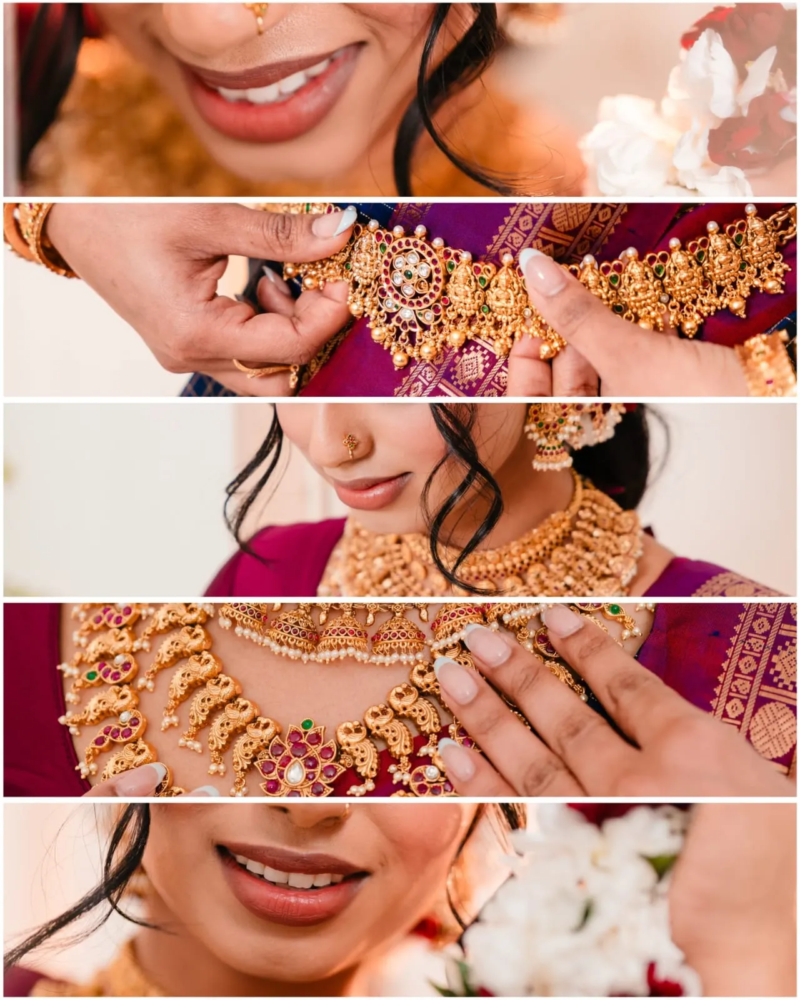

Selected Work
Recent Stories

The First Glance


Still & Found


Golden Hour
I document love stories, emotional ceremonies, and quiet human moments — with a fine-art sensibility drawn from years at the intersection of science and art. Every frame is a still life. Every still life, a feeling.
Selected Work
The First Glance

Still & Found

Golden Hour
Full-day documentary coverage of your ceremony — candid emotions, quiet rituals, and every stolen glance between you.
→Intimate editorial shoots built around your story — a location, a feeling, a mood. No posing scripts. Just real connection.
→Single-subject or family portraits crafted with the same fine-art lens — light, stillness, and the complexity within simplicity.
→The Photographer
KVM Creations is a Sri Lankan-born, London-based photographer and multi-disciplinary artist holding a Ph.D. in Cancer Biology. She brings the same rigorous curiosity from the laboratory into every frame — observing, waiting, and capturing the moment that reveals the most.
Her work explores humour, pain, compassion, and sadness — seeking complexity within simplicity to tell compelling stories that last beyond the moment.
Read the full story